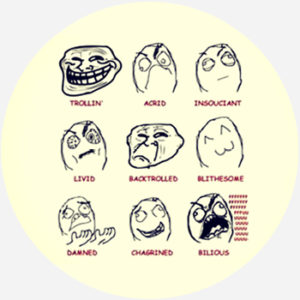
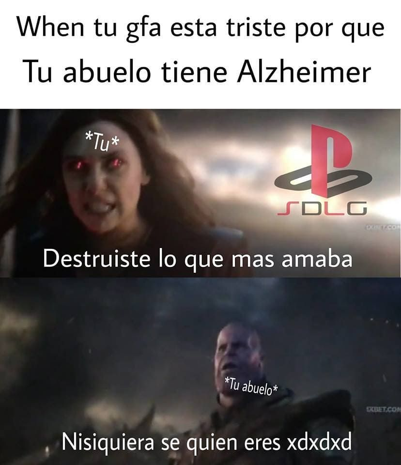
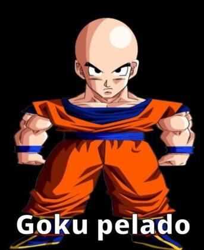

Los memes como tal tienen su origen en la antigua Grecia, donde se utilizaban para hacer sátira política. Tambien se estudio como un fenomeno biologico en el ser humano, ya que el cerebro humano es capaz de procesar imagenes mas rapido que el texto. Wikipedia define a los memes como "Aquello que se usa para describir una idea, concepto, situación, expresión o pensamiento manifestado en cualquier tipo de medio virtual, cómic, vídeo, audio, textos, imágenes y todo tipo de construcción multimedia que puede provocar gracia o sensaciones similares; se replica a través de internet de persona a persona hasta alcanzar una amplia difusión.". En este apartado nos dedicaremos a hablar de los memes de internet, los cuales tienen su origen en el año 2000. Con el surgimiento de las redes sociales, los memes se volvieron virales y se convirtieron en una forma de comunicación. Asi que nos dedicaremos a ver como inicio su recorrido por la Net.

Los primeros memes de internet fueron los "Rage Comics", los cuales eran historietas que se compartian en foros de internet. Estos comics se caracterizaban por tener personajes con caras exageradas y expresiones que se utilizaban para expresar emociones. Los Rage Comics se volvieron virales y se convirtieron en un fenomeno de internet.
Los memes basados en fotografias se volvieron populares en el año 2010, con el surgimiento de las redes sociales. Estos memes se caracterizan por tener una fotografia con un texto que se utiliza para expresar una idea o situacion. Los memes basados en fotografias se volvieron virales y se convirtieron en una forma de comunicacion en internet. A dia de hoy estos memes siguen siendo muy relevantes en internet a dia de hoy, a pesar de su longevidad en el mismo.

Apartir de los años 2015-18 nacieron los memes que se basaban en plantillas de imagenes o videos de peliculas cinematograficas muy graciosas donde la gente , si bien era una foto esta colocaba un texto que se relacionaba con la imagen o el video para relacionarlo con alguna situacion o contexto cotidiano en comun entre sociedad. Muchos grupos de memes surgieron a partir de estas plantillas, y se volvieron virales en internet. como por ejemplo en la comunidad hispano-parlante, surgio "SDLG" o la "La Grasa" que se volvieron el grupo momero mas influyente en esa epoca.
Pasamos a los memes mas actuales 20-Actualidad, los memes sin contexto. Son aquellos memes que provienen buscar un sentimiento de gracia o similar a traves de una situacion complamente aleatoria, memes sin sentido alguno que por algun contexto del mismo, su imagen, su texto, su audio o su video, este causa una gracia a su consumidor. Estos memes nacieron del 2014 con la serie de Cartoon Network llamada "MAD" que se dedicaba a hacer parodias de peliculas de hollywood y a crear memes sin sentido pero que causaban gracia. Especificamente este tipo de formato es denominado "Shitpost" debido a que no tiene sentido alguno, pero causa gracia.
